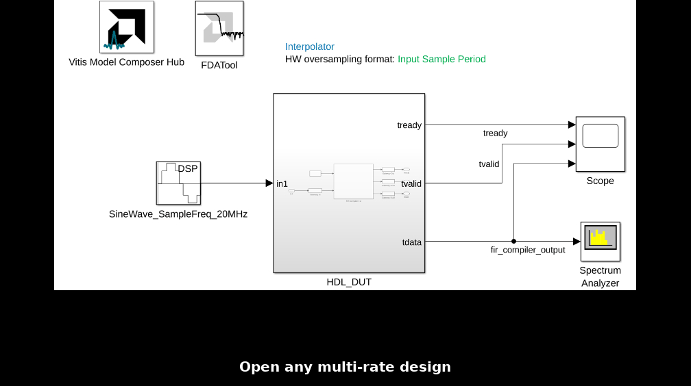

Debugging Multirate HDL Designs
Read this Quick Guide to see how to configure Vitis Model Composer to accurately model timing in multirate HDL designs. You will also see how to view sampling frequencies of signals in the design for debugging purposes.
Configure Simulink System Period and FPGA Clock Period
We'll use a simple example of a FIR filter that interpolates a signal's sample rate from 20 MSPS to 100 MSPS.
To open the design, double-click Interpolator.slx in the Current Folder browser.
Locate and open the Vitis Model Composer Hub block.
Select the Settings tab to view the Simulink System Period and FPGA Clock Period settings for this model.
The Simulink System Period value should be the greatest common divisor (gcd) of all the sample periods that appear in the model.
Simulink System Period
Simulink System Period Computation is explained below:
Input Sample Rate: 20MHz (Input Sample Period: 1/20MHz = 50ns)
Expected Output Sample Rate: (Input Sample Rate) * (FIR interpolation factor) = 20MHz * 5 = 100 MHz
Output Sample Period: 1/100MHz = 10ns
gcd(Input Sample Period, Output Sample Period) = gcd(50,10) = 10
Therefore, the Simulink System Period setting in the Hub block is 10e-9.
FPGA Clock Period
The FPGA Clock Period should be set based on the expected rate of the FPGA's clock when the design is running in hardware. Vitis Model Composer will generate the HDL code accordingly.
When the FPGA Clock Period and Simulink System Period are equivalent, the displayed sample frequencies in Vitis Model Composer and sample periods in Simulink will match those of the design running on hardware. That is the case for this example model:
FPGA Clock Period(ns): (Simulink System Period) * 1e9 = 10
For more details on setting Simulink System Period and FPGA Clock Period, please click here.
Display Sampling Frequencies in the Design
Selecting Sample Frequencies (MHz) in the Hub block helps visualize the available sampling frequencies for input and output ports in your multi-rate design. This is useful for debugging and validating timing.
In the Vits Model Composer Hub block, navigate to the Analyze tab.
In the Block Icon Display dropdown, choose
Sample Frequencies (MHz).Click
Update the modelto apply the changes.
Input and output ports will now display their respective sampling frequencies in MHz.
The animation below demonstrates how to display sampling frequencies in the design:

Note the interpolation of the FIR filter (20 MHz to 100 MHz) depicted on the input and output ports.
Conclusions
 Setting the Simulink System Period and FPGA Clock Period is crucial to accurately modeling multirate systems.
Setting the Simulink System Period and FPGA Clock Period is crucial to accurately modeling multirate systems.
 Displaying sample frequencies provides a quick visual check of input and output sampling rates, making it easier to debug multi-rate designs and ensure correct timing.
Displaying sample frequencies provides a quick visual check of input and output sampling rates, making it easier to debug multi-rate designs and ensure correct timing.
Copyright (c) 2025 Advanced Micro Devices, Inc.
Licensed under the Apache License, Version 2.0 (the "License");
you may not use this file except in compliance with the License.
You may obtain a copy of the License at
http://www.apache.org/licenses/LICENSE-2.0
Unless required by applicable law or agreed to in writing, software
distributed under the License is distributed on an "AS IS" BASIS,
WITHOUT WARRANTIES OR CONDITIONS OF ANY KIND, either express or implied.
See the License for the specific language governing permissions and
limitations under the License.